Manifolds and Vector bundles
Basic notions of Manifolds
Remark 1. A line with two origins is locally Euclidean, but not Hausdorff. Since these spaces are not nice, we assume Hausdorff and second countability will be assumed by default.
Fix a model subcategory \(\mathfrak{A} \subset \mathbf{Vect}_\mathbb{R}\), with a notion of a map \(V \to W\) being \(C^k\). Then, category of \(C^k\)-manifolds on \(\mathfrak{A}\), \(\mathbf{Man}^k(\mathfrak{A})\), is given by
Objects: A \(C^k\)-manifold is a space that is locally \(C^k\)-isomorphic to a model \(V\).
Morphisms: A \(C^k\)-smooth map is a map between \(C^k\)-manifolds that is locally a \(C^k\)-map \(V \to W\) in \(\mathfrak{A}\).
Definition 1. Space of \(C^k\)-smooth maps \(M \to N\) is denoted as \(C^k(M, N)\), and is abbreviated as \(C^k(M)\) when \(N = \mathbb{R}\).
Example 1. For \(\mathfrak{A} = \mathbf{Vect}^{fin}_\mathbb{R}\), \(\mathbb{R}^m \to \mathbb{R}^n\) being \(C^k\) can be given in a coordinate-wise manner. This gives the usual notion of \(C^k\)-manifolds, \(\mathbf{Man}^k\), including \(k = \infty\) case for smooth manifolds.
Definition 2. A \(C^k\)-manifold has a (non-unique) covering \(\{ U_\alpha \}\) with embeddings \(\{ \phi_\alpha : U_\alpha \to V \}_\alpha\), which is called an atlas. Each map \(\phi_\alpha\) is called a chart.
Definition 3. A smooth structure of a topological space \(X\) is an isomorphism class of smooth manifold \(\tilde{X}\) where forgetful functor sends it back to \(X\).
Definition 4. An isomorphism of \(\mathbf{Man}^k\) is called a (\(C^k\)-)diffeomorphism.
Relations of Manifolds
Proposition 1. \(\mathbf{Man}^k\) has finite products, i.e., for \(A, B \in \mathbf{Man}^k\), one has smooth projections \(\pi_A : A \times B \to A\) and \(\pi_B : A \times B \to B\) satisfying the universal properties.
Definition 5. Consider manifolds with inclusion \(N \hookrightarrow M\). \(N\) is an immersed submanifold of \(M\) if the inclusion is an immersion. If it is also a topological embedding, then \(N\) is a (embedded) submanifold of \(M\), and the inclusion is a smooth embedding.
Example 2. Open inclusion is a smooth embedding.
Basic notions of Vector bundles
There is a relative notion of smooth manifolds on a base space, which represents a smoothly varying family of vector spaces.
The category of vector bundles (on \(\mathcal{A}\)) over base space \(B\), \(\mathbf{Vect}_B(\mathcal{A})\), consists of
Objects: A vector bundle over \(B\) of model \(V\) is a smooth surjection \(\pi : E \to B\) that is locally trivial, i.e., it is covered by local maps \(\pi_U : E|_U = \pi^{-1}(U) \to U\) which is diffeomorphic to the projection \(B \times V \to B\), and each fiber \(E_p := \pi^{-1}(p)\) has corresponding consistent linear structure.

Morphisms: A bundle map over \(B\) is a smooth map \(\phi : E_1 \to E_2\) over \(E_i \to B\) which is linear on each fiber.

Similarly, morphisms can be defined over \(F : B \to B'\).
Definition 6. In a vector bundle \(\pi : E \to B\), \(E\) is called the total space, and \(B\) is the base space. The diffeomorphism \(\Phi : E|_U \to U \times V\) is called a local trivialization.
Example 3. Trivial vector bundle of rank \(r\) is a space \(\underline{\mathbb{R}^n}_B := B \times \mathbb{R}^n\) with the identity as a trivialization.
Definition 7. Given a vector bundle \(\pi : E \to B\), a local section over an open \(U \subset E\) is a smooth map \(s : U \to E\) with \(\pi \circ s : U \to E \to B\) being an inclusion. A global section is the case where \(U = B\). The space of local sections over \(U\) is denoted \(\Gamma(U, E)\).
Definition 8. For a vector bundle \(E \to B\), a local frame over \(U\) is set of local sections \(\{ \sigma_j \}\) which forms a basis on each fiber. A global frame is the same but for \(U = B\). These corresponds to the local/global trivializations.
Remark 2. \(\Gamma(B, -) : \mathbf{Vect}_B \to \mathbf{Mod}_{C^\infty(B)}\) is a functor, where the \(C^\infty(B)\)-module structure comes from fiberwise vectorspace structure. In particular, one has a zero section on any \(\Gamma(B, E)\) which maps to \(0\) at each fiber.
Fact 1 (Serre-Swan Theorem). For the usual model \(\mathbf{Vect}^{fin}_\mathbb{R}\), \(\Gamma(B, -)\) defines equivalence of categories: \[\begin{matrix} \mathbf{Vect}_B & \leftrightarrow & \begin{Bmatrix} \text{Finitely generated projective} \\ \text{in $\mathbf{Mod}_{C^\infty(B)}$} \end{Bmatrix} \\ \begin{Bmatrix} \text{Trivial bundle} \\ \text{in $\mathbf{Vect}_B$} \end{Bmatrix} & \leftrightarrow & \begin{Bmatrix} \text{Finitely generated free} \\ \text{in $\mathbf{Mod}_{C^\infty(B)}$} \end{Bmatrix} \end{matrix}\]
Definition 9. Given a covering local trivializations \(\{ \Phi_\alpha : E|_{U_\alpha} \to U_\alpha \times V \}\), a transition map between \(\Phi_\alpha\) and \(\Phi_\beta\) is a smooth map \(g_{\alpha\beta} : U_\alpha \cap U_\beta \to GL(V)\)
Remark 3. Clearly, \(g_{\alpha \beta} g_{\beta \alpha} = 1\) and \(g_{\alpha \beta} \cdot g_{\beta \gamma} = g_{\alpha \gamma}\) wherever both sides are defined. These conditions are called cocycle conditions, and \(\{ g_{\alpha \beta} \}\) satisfying these conditions are called cocycles. These can be used to construct a vector bundle.
Relations of vector bundles
Definition 10. An injective bundle map \(E' \hookrightarrow E\) of vector bundles presents \(E'\) as a submanifold(?) of \(E\). Then, \(E' < E\) is called vector subbundle of \(E\).
Example 4 (Tautological bundle). In particular, nontrivial bundle can be a subbundle of a trivial bundle.
Definition 11. Given a subbundle \(E' < E\), one has a quotient bundle \(E/E'\) given as a initial object where \(E' \to E \to E/E'\) is a trivial bundle map, i.e., \(E/E'\) is a cokernel of \(E' \hookrightarrow E\).
Remark 4. Fibers of \(E/E'\) is \(E_p / E'_p\).
Proposition 2. \(\mathbf{Vect}_B\) has biproducts, called direct sum or Whitney sum, denoted \(E \oplus F\) for vector bundles \(E, F\). Further, \((E \oplus F)_p = E_p \oplus F_p\).
Proposition 3. \(\mathbf{Vect}_B\) has internal hom object, called a Hom bundle and denoted \(\underline{\hom}(E, F)\) for vector bundles \(E\), \(F\). Further, \(\underline{\hom}(E, F)_p = \hom(E_p, F_p)\).
Definition 12. A dual bundle \(E^*\) of \(E\) is a Hom bundle \(E^* = \underline{\hom}(E, \underline{\mathbb{R}})\).
Definition 13. Given a vector bundle \(\pi : E \to M\) with a smooth map \(\phi : Y \to M\), the fiber product of \(\phi\) and \(\pi\) is a total space \(\phi^* E = Y \times_M E := \{ (y, e) \mid \phi(y) = \pi(e) \}\) together with the projection \(\phi^* \pi : Y \times_M E \to Y\).

Then, \(\phi^* \pi : \phi^* E \to Y\) is called the pullback bundle of \(E\) along \(\phi\).
Remark 5. \((\phi^* E)_p = E_{\phi(p)}\).
Remark 6. The pullback bundle is terminal in \(\mathbf{Vect}_Y\) with the diagram above.
Example 5. For a bundle \(E\) on \(M\) with submanifold \(\iota : Y \hookrightarrow M\), one has restriction \(E|_Y := \iota^* E\).
First order Differential structures
The first order differential is subject of interest for obvious reasons, including it being the first. Another vital aspect of first differential is that it gives rise to a tangent bundle.
Partition of Unity
We first introduce partition of unity, a construction of great utility. This is a smooth counterpart for index functions partitioning a space.
Remark 7. Note that \(C^k(M)\) is not closed under countable sum. Indeed, continuity already fails for (insert example here). This implies summation of \(C^k\) only works finitely, at least in the local sense.
Definition 14. A partition of unity on a smooth manifold \(M\) is a collection of nonnegative smooth functions \(\{\rho_\alpha\}\) satisfying
Locally finite, i.e., only finitely many of \(\rho_\alpha\)’s are nonzero in any small enough neighborhood.
\(\sum_\alpha \rho_\alpha = 1\) on entire \(M\).
The partition of unity is subordinate to an open cover \(\mathcal{U} = \{ O_\alpha \}\) if \(\{ \rho_\alpha \neq 0 \} \subset O_\alpha\) for each \(\alpha\).
Lemma 4 (Existence of a bump function on the model space). Consider \(U \supset E\) on the model space \(V = \mathbb{R}^n\), where \(U\) is open and \(E\) is closed. Then, there is a \(C^\infty\)-smooth bump function \(f\) such that \(f^{-1}(0) = V \setminus U\), and \(f^{-1}(1) = E\).
Theorem 5 (Existence of partition of unity). Given a smooth manifold \(M\) with open cover \(\mathcal{U}\), there is a partition of unity \(\{\rho_\alpha\}\) subordinate to \(\mathcal{U}\).
Lemma 6. Suppose another open cover \(\mathcal{V}\) is a refinement of \(\mathcal{U}\), i.e., one has mapping \(\kappa : \mathcal{V} \to \mathcal{U}\) where \(V_{\beta} \subset U_{\kappa(\beta)}\). Then, partition of unity to \(\mathcal{V}\) gives a partition of unity to \(\mathcal{U}\).
Proof. For the partition of unity \(\{ \eta_\beta \}\) subordinate to \(\mathcal{V}\), one has \(\rho_\alpha := \sum_{\beta \in \kappa^{-1}(\alpha)} \epsilon_\beta\) subordinae to \(\mathcal{U}\) which clearly satisfies \(\sum \rho_\alpha = 1\). Further, locally finitely many \(\eta_\beta\)’s are nonzero, so the same should hold for the partitioned sum \(\rho_\alpha\)’s. ◻
Proof of Theorem. First, we may reduce to the case where \(\mathcal{U}\) is locally finite.
Next, we may regard each \(O_\alpha\) to be isomorphic to the model space, \(V = \mathbb{R}^n\). Indeed, one can replace each element in \(\mathcal{U}\) by its (locally finite) atlas, obtaining a refinement with a chart.
(Proof too technical, will review later) ◻
Tangent spaces
Tangent space \(T_p M\) is a \(\mathbb{R}\)-vectorspace where first differential structure lives, and is an infinitesimal analogue of the model space. It also ‘acts’ on locally defined functions via “derivation".
For \(p \in M\), denote \(M_p\) to be a pointed space \((M, p)\) in the pointed category.
Definition 15. Given two manifolds \(M\) and \(N\), germs of functions at \(p \in M\) onto \(N\) is the colimit \[C_p^\infty(M, N) = \mathop{\mathrm{colim}}_{U \ni p} C^\infty(U, N)\] where directed set is given by \(C^\infty(U, N) \to C^\infty(U', N)\) where \(p \in U' \subset U\).
The same works for pointed spaces as well; we will denote the germs of curves as \(\mathfrak{C}_p M := C^\infty_0 (\mathbb{R}_0, M_p)\).
Remark 8. Germs of functions is basically an equivalence class of local functions, where equivalence is given by whether functions coincide in some local neighborhood.
Remark 9. Since germs are local, for each chart \(\phi : U_p \xrightarrow{\sim} V_0\), one has pushforward \(\phi_* : \mathfrak{C}_p M \xrightarrow{\sim} \mathfrak{C}_0 V\) for \(V\) modelling \(M\).
Remark 10. \(\mathfrak{C}_0 V\) is a \(\mathbb{R}\)-vectorspace by pointwise operations.
Proposition 7. Consider maps \(\mathfrak{C}_p M \simeq \mathfrak{C}_0 V \xrightarrow{\partial} V\) given by charts. These maps give a consistent identification \(T_p M := \mathfrak{C}_p M / \sim\) where equivalence is given by being the same on the image \(V\). Further, \(T_p M\) inherits the \(\mathbb{R}\)-vectorspace structure, and \(T_p M \simeq V\).
Definition 16. \(T_p M\) is called the tangent space of \(M\) at \(p\). An element of a tangent space is called a tangent vector.
Proof.
Claim:Maps \(\mathfrak{C}_p M \xrightarrow{\sim} \mathfrak{C}_0 V \xrightarrow{\partial} V\) given by charts are naturally isomorphic to each other.
In other words, one has a commuting diagram

that is commutative over all such maps. The red colored map is given by Jacobi matrix \(J_0 (\psi \circ \phi^{-1}) \in \mathop{\mathrm{End}}V\), as \[((\psi \circ \phi^{-1})_* \gamma)'(0) = J_0 (\psi \circ \phi^{-1}) \cdot \gamma'(0)\] by chain rule. ◻
One also has a tangent space functor, given by \[\begin{matrix} \mathbf{Man}_* & \to & \mathbf{Vect}_\mathbb{R}\\ M_p & \mapsto & T_p M \\ (F : M_p \to N_{F(p)}) & \mapsto & (dF_p : T_p M \to T_{F(p)} N) \end{matrix}\] where \(dF_p\) is \(F_*\) cut under equivalences; this is well-defined considering the charts.
The tangent space has a canonical ‘action’ on functions \(C^\infty(M)\), given as \[\begin{matrix} T_p M & \to & \hom_\mathbb{R}(C^\infty(M), \mathbb{R}) \\ v & \mapsto & (f \mapsto df_p v) \end{matrix}\] where \(T_x \mathbb{R}\) is identified with \(\mathbb{R}\) via the natural isomorphism. For finite dimensional models, this gives an alternative definition by derivations.
Tangent bundle
Theorem 8. Given a manifold \(M\), there is the unique vector bundle \(TM \to M\) with fibers \(TM_p = T_p M\) such that each chart \(\phi : U \xrightarrow{\sim} V\) admits a local trivialization given by \[\begin{matrix} TM|_U & \xrightarrow{\sim} & U \times V \\ (p \in U, v \in T_p U) & \mapsto & (p, d\phi_p v) \end{matrix}.\]
Definition 17. The above vector bundle is called the tangent bundle of \(M\).
Proof. Let \(TM := \sqcup_{p \in M} T_p M\) with canonical projection \(TM \to M\). Suffices to show that local trivializations given by charts are compatible with each other.
Consider two charts \(\phi_\alpha : U_\alpha \to V\), \(\phi_\beta : U_\beta \to V\). The cocycle between these two charts can be computed from \(U_\alpha \times V \to TM|_U \to U_\beta \times V\). That is, \[\begin{matrix} U_\alpha \cap U_\beta & \to & \mathop{\mathrm{End}}V \\ p & \mapsto & (v \mapsto d\phi_{\beta, p} \circ (d\phi_{\alpha, p})^{-1} v) \end{matrix}\] Since \(\phi_\alpha\), \(\phi_\beta\) are diffeomorphisms, its differential maps are linear isomorphisms. Hence, the local trivializations compatibly and uniquely define \(TM\). ◻
Remark 11. Tangent bundle can be thought of smoothly varying collection of tangent spaces.
Fact 2. Analogous construction fails to be a vector bundle on the second differential or above. Instead, the jet bundles are fiber bundles.
Tangent bundle gives a functor \[\begin{matrix} \mathbf{Man}& \to & \mathbf{Man}\\ M & \mapsto & TM \\ (f : M \to N) & \mapsto & (df : TM \to TN) \end{matrix}.\] where \(df(p, v) = (f(p), df_p v)\).
There are couple of important bundles derived from tangent bundles and pullback bundles.
Remark 12. Given a map \(f: X \to Y\), the functorial map \(TX \to TY\) induces \(df : TX \to f^* TY\) by universal property of pullback bundles; this is a map over \(\mathbf{Vect}_X\).
Definition 18. Given a submanifold \(\iota : Y \hookrightarrow M\), the normal bundle of \(Y\) on \(M\) is the quotient bundle \(N_{M/Y} := TM|_Y / TY\), where the inclusion is \(TY \to \iota^* TM = TM|_Y\).
Definition 19. Given a surjective submersion \(\pi : M \to N\), the vertical tangent bundle of \(\pi\) is the kernel \(T_\pi M = \ker (d \pi : TM \twoheadrightarrow \pi^* TN)\).
Remark 13. Under the above definitions, one has short exact sequences \[0 \to TY \to TM|_Y \to N_{M/Y} \to 0,\] \[0 \to T_\pi M \to TM \to \pi^* TN \to 0.\]
Rank of a smooth map
Rank of a smooth map arises from first order differential structure, but for the reason tangent spaces ‘represent’ model space, it takes an important role in characterizing relations like diffeomorphisms and embeddings.
Definition 20. Given a smooth map \(F : M \to N\), its rank at \(p \in M\) is \(rk_p F := rk(d F_p)\). If it is the same across entire \(M\), \(F\) is called a map of constant rank, and \(rk F = rk_p F\) is the rank of map \(F\).
Definition 21. A map \(F : M \to N\) of constant rank is called
an immersion if \(rk F = \dim M\),
a submersion if \(rk F = \dim N\).
That is, \(dF_p\) is injective if \(F\) is an immersion, and \(dF_p\) is surjective if \(F\) is a submersion.
Lemma 9 (Semicontinuity of rank). For a smooth map \(F : M \to N\), rank of \(F\) is lower-semicontinuous, i.e., for \(rk_p F = r\) there is an open neighborhood of \(p\) where rank is higher than \(r\).
Proof. Fix charts for \(F\) near \(p\), which gives a smooth map \(A : U \to \mathop{\mathrm{Hom}}(V, W)\) corresponding to \(q \mapsto dF_q\). Since \(rk_q F = rk A(q)\), enough to show lower-semicontinuity of rank of \(A(q)\). Take the \(r\)-dimensional subspaces \(\tilde{V} \leq V, \tilde{W} \leq W\) on which \(A(p)\) is invertible. Notice \(\det A(p) \neq 0\) on this restriction. Since \(q \mapsto \det A(q)\) is continuous, it is locally nonzero, showing the lower-semicontinuity. ◻
Theorem 10 (Inverse function theorem). If \(dF_p\) is invertible, then \(F\) is locally diffeomorphic at \(p\), i.e., \(F|_U : U \to V\) is a diffeomorphism for some neighborhood \(U\) of \(p\), \(V\) of \(F(p)\).
Proof. By Lemma \(\ref{rank-semicontinuity}\), \(F\) has locally full rank. Fix the charts for \(F\) near \(p\), so that we may regard \(F : V \to W\), on which \(dF_q\) is invertible. ◻
Corollary 11. If a map \(F\) is both an immersion and a submersion, then it is a local diffeomorphism, i.e., \(F|_U : U \to V\) is a diffeomorphism for a covering \(U\)’s and \(V\)’s.
Corollary 12 (Characterization of diffeomorphism). A map is a diffeomorphism if and only if it is both an immersion, a submersion, and a bijection.
Proof. Enough to prove the converse direction. Once a bijection is a local diffeomorphism, its inverse map is also clearly a local diffeomorphism (by symmetry), so the two together forms a diffeomorphism. ◻
Theorem 13 (Rank Theorem). If a map \(F : M \to N\) has a rank \(r \leq m = \dim M\) at \(p \in M\), there are charts \(U \simeq W\) and \(V \simeq W'\) such that \(F|_U : U \to V\) is isomorphic to \(\mathfrak{F}: W \to W'\) where \(\mathfrak{F}\) being a linear map onto \(r\)-dimensional subspace.
Theorem 14 (Global Rank Theorem). Suppose \(F : M \to N\) is a smooth map of constant rank.
If \(F\) is injective, it is an immersion.
If \(F\) is surjective, it is a submersion.
Connections
Definition 22. An affine connection is an \(\mathbb{R}\)-bilinear map \[\nabla : \mathfrak{X}(M) \times \mathfrak{X}(M) \to \mathfrak{X}(M),\] often denoted \(\nabla_X Y\), which is \(C^\infty(M)\)-linear in \(X\), and satisfies the Leibniz rule: \(\nabla_X (f Y) = (X f) Y + f \nabla_X Y\).